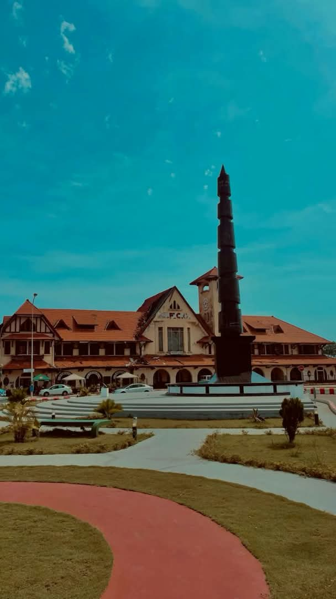

Pointe-Noire is the second largest city and main economic centre in the Republic of Congo. It's situated on a headland between Pointe-Noire bay and the Atlantic ocean, and is located near the border with Angola. Pointe-Noire is also the terminus of the Congo-ocean, the railway station being a notable buiding. As of 2014 the railway was operating the La Gazelle train service, every other day to Brazzaville and intermediate destinations.
